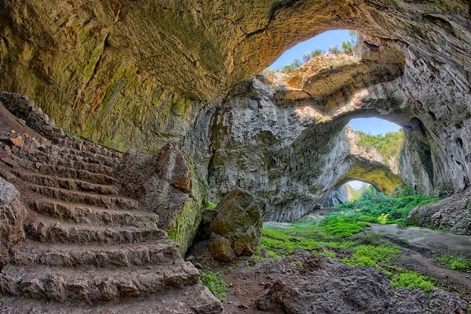

- Паметници
- Пещери
- Природа
Пещера Снежанка се намира в Родопите, Община Пещера. Богата е на сталагмити, сталактити, сталактони, драперии, синтрови езерца. Най-големият сталактит е дълъг 1,27 м.
"Снежанка" се състои от няколко красиви зали: Залата на виметата, Голямата зала, Музикалната зала, свързани със Срутището, над което минава мост. Във Вълшебната зала, покрита със
снежнобял кристален синтър, природата е създала фигурка, оприличавана на приказната героиня. Името на пещерата идва от снежнобелия синтър.

Деветашката пещера е сред най-големите пещери в България.Разположена е на около 7 km от Летница и на 15 km североизточно от Ловеч, близо до село Деветаки.
Открита е през 1921 г. Нейната обща дължина е 2442 m, площта – 20 400 m², а височината – 60 m.На около 40 m навътре от входа има просторна зала с площ 2400 m². Освен с археологическите находки пещерата е известна и с многообразието
от обитатели. Там обитават 12 вида защитени земноводни, смок мишкар (включен в Червената книга), южен гребенест тритон, жаба дървесница, обикновена блатна костенурка, шипоопашата
костенурка (включена в Световния червен списък), 82 вида птици, които се срещат в района, 13 от които включени в Червената книга, 34 вида бозайници (4 от които включени в Червената
книга на България, а 15 – в световния червен списък) и 15 вида прилепи.
Магурата се намира на около 18 km северозападно от град Белоградчик и югозападно от село Рабиша. Образувана е от карстови процеси в дебелослойни долнокредитни сивобели варовици. Тя е
една от най-големите български пещери. Изходът ѝ се нарича Вратача. Някои зали имат колосални размери. Отделни зали са Триумфална зала, Полето, Хармана, Прилепна галерия, Стрелбището,
Галерията с рисунките, Зловеща галерия, Слънчева зала, Зала на сталактоните, Зала на падналия бор, Зала на тополата, Тронна зала. Магурата е най-значимата за прилепите пещера в цяла
Северозападна България. Целогодишно се обитава от общо 8 вида, всички приоритетни за опазване в цяла Европа.